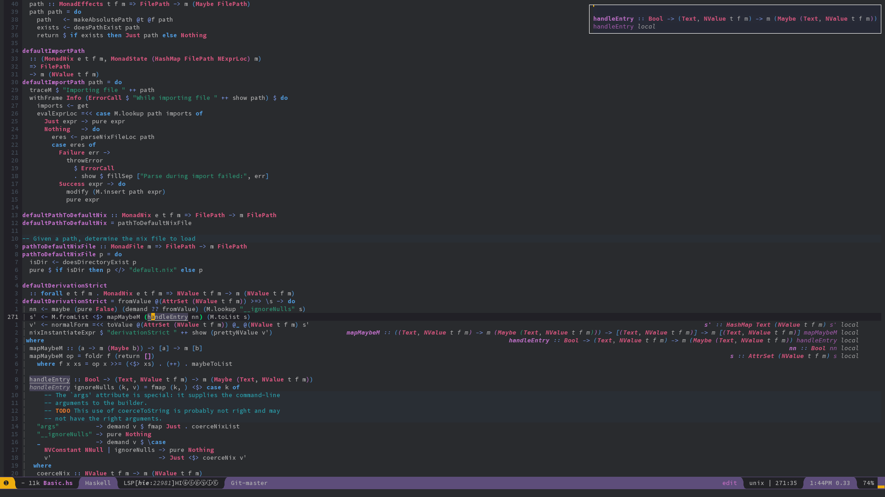

Integration of NixOS/Nix with Haskell IDE Engine (HIE) and Emacs (Spacemacs)¶
1. Install the Cachix: https://github.com/cachix/cachix¶
2. Installation of HIE: https://github.com/infinisil/all-hies/#cached-builds¶
2.1. Provide cached builds¶
1 | cachix use all-hies |
2.2.a. Installation on NixOS distribution:¶
1 2 3 4 5 6 7 8 9 10 11 12 13 | { config, pkgs, ... }: let all-hies = import (fetchTarball "https://github.com/infinisil/all-hies/tarball/master") {}; in { environment.systemPackages = with pkgs; [ (all-hies.selection { selector = p: { inherit (p) ghc865 ghc864; }; }) ]; } |
Insert your GHC versions.
Switch to new configuration:
1 | sudo -i nixos-rebuild switch
|
2.2.b. Installation with Nix package manager:¶
1 | nix-env -iA selection --arg selector 'p: { inherit (p) ghc865 ghc864; }' -f 'https://github.com/infinisil/all-hies/tarball/master' |
Insert your GHC versions.
3. Emacs (Spacemacs) configuration:¶
1 2 3 4 5 6 7 8 9 10 11 12 13 14 15 16 17 18 19 20 21 22 23 24 25 26 27 28 29 30 31 | dotspacemacs-configuration-layers '( auto-completion (lsp :variables default-nix-wrapper (lambda (args) (append (append (list "nix-shell" "-I" "." "--command" ) (list (mapconcat 'identity args " ")) ) (list (nix-current-sandbox)) ) ) lsp-haskell-process-wrapper-function default-nix-wrapper ) (haskell :variables haskell-enable-hindent t haskell-completion-backend 'lsp haskell-process-type 'cabal-new-repl ) ) dotspacemacs-additional-packages '( direnv nix-sandbox ) |
Where:
auto-complettion configures YASnippet.
nix-sandbox (https://github.com/travisbhartwell/nix-emacs) has a
great helper functions. Using nix-current-sandbox function in
default-nix-wrapper that used to properly configure
lsp-haskell-process-wrapper-function.
Configuration of the lsp-haskell-process-wrapper-function
default-nix-wrapper is a key for HIE to work in nix-shell
Inside nix-shell the haskell-process-type 'cabal-new-repl is
required.
/Configuration was reassembled from: https://github.com/emacs-lsp/lsp-haskell/blob/8f2dbb6e827b1adce6360c56f795f29ecff1d7f6/lsp-haskell.el#L57 & its authors config: https://github.com/sevanspowell/dotfiles/blob/master/.spacemacs /
Refresh Emasc.
4. Open the Haskell file from a project¶
Open system monitor, observe the process of environment establishing, packages loading & compiling.
5. Be pleased writing code¶

Now, the powers of the Haskell, Nix & Emacs combined. It's fully in your hands now. Be cautious - you can change the world.
6. (optional) Debugging¶
- If recieving sort-of:
1 | readCreateProcess : cabal-helper-wrapper failure |
HIE tries to run cabal operations like on the non-Nix system. So it is
a problem with detection of nix-shell environment, running inside it.
- If HIE keeps getting ready, failing & restarting - check that the
projects
ghc --versionis declared in yourall-hieNixOS configuration.